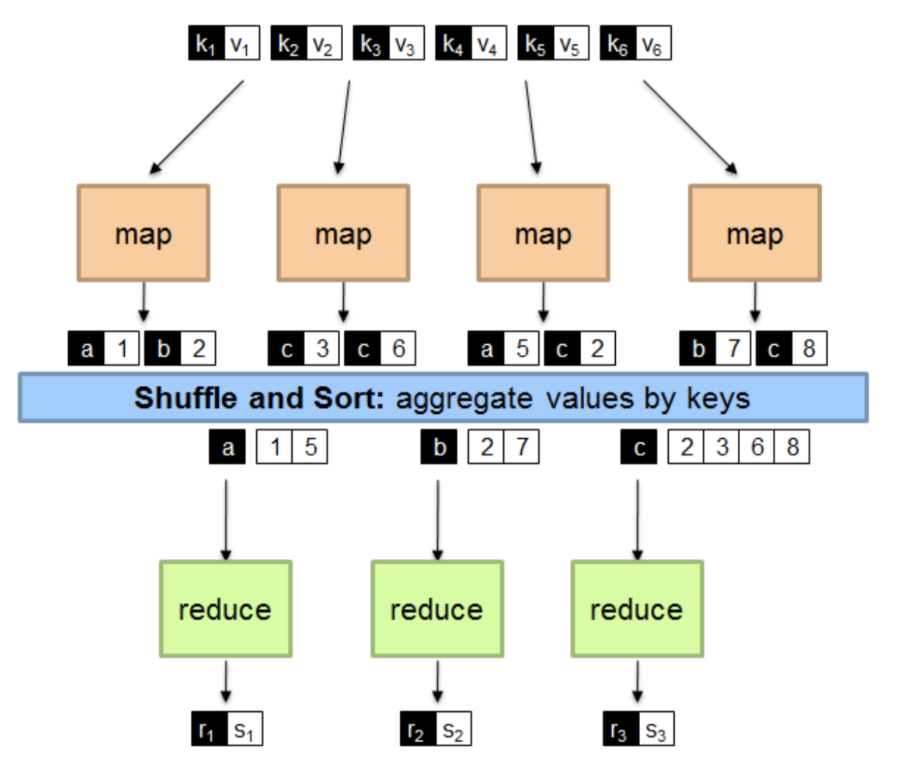
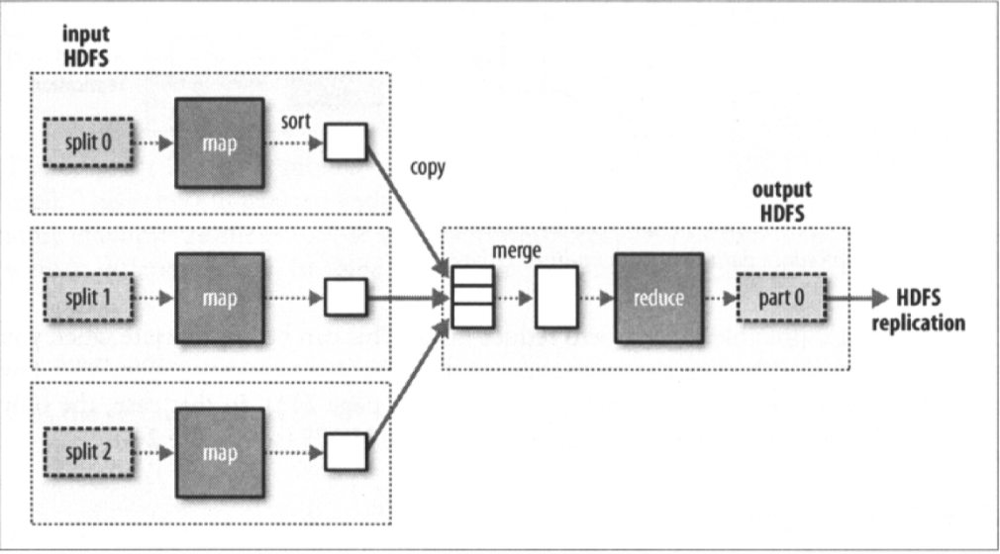
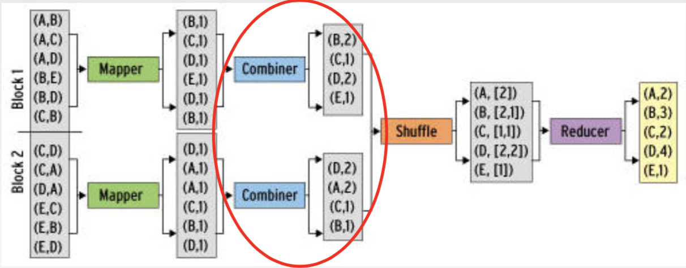
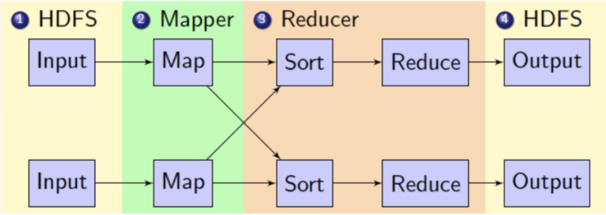

How it works?
The Idea of MapReduce
Key idea: provide a functional abstraction for these two operations
-
Map as a transformation over a dataset:
- This transformation is specified by the function f
- Each functional application happens in isolation
- The application of f to each element of a dataset can be parallelized in a straightforward manner
-
Reduce as an aggregation(聚集) operation:
- The aggregation is defined by the function g
- Data locality: elements in the list must be “brought together”
- If we can group elements of the list, also the reduce phase can
proceed in parallel
Data Structures in MapReduce
-
Key-value pairs are the basic data structure in MapReduce
- Keys and values can be: integers, float, strings, raw bytes
- They can also be arbitrary data structures
-
The design of MapReduce algorithms involves:
- Imposing the key-value structure on arbitrary datasets
4 E.g.: for a collection of Web pages, input keys may be URLs and values may be the HTML content - In some algorithms, input keys are not used (e.g., wordcount), in others they uniquely identify a record
- Keys can be combined in complex ways to design various algorithms
- Imposing the key-value structure on arbitrary datasets
Map and Reduce Functions
Programmers specify two functions:
map: (k1, v1) → list [<k2, v2>]
- Map transforms the input into key-value pairs to process
reduce: (k2, list [v2]) → [<k3, v3>]
-
Reduce aggregates the list of values for each key
-
All values with the same key are sent to the same reducer
-
list [<k2, v2>] will be grouped according to key k2 as (k2, list [v2])
A Brief View of MapReduce：

Shuffle:
Input to the Reducer is the sorted output of the mappers. In this phase the framework fetches the relevant partition of the output of all the mappers, via HTTP.
Sort:
The framework groups Reducer inputs by keys (since different
Mappers may have output the same key) in this stage.
Hadoop framework handles the Shuffle and Sort step :

Combiners:
Combiners are a general mechanism to reduce the amount of
intermediate data, thus saving network time, like “mini-reduces”
- The use of combiners must be thought carefully
- Optional in Hadoop: the correctness of the algorithm **cannot depend on **computation (or even execution) of the combiners
- A combiner operates on each map output key. It must have the same output key-value types as the Mapper class.
- A combiner can produce summary information from a large dataset because it replaces the original Map output
- Works only if reduce function is commutative and associative
- In general, reducer and combiner are not interchangeable
For example: Combiners in wordcount:

In this example, Reducer and Combiner do the same thing
, BUT most cases are not! So, you need to write an extra combiner class.
Partitioner:
Partitioner controls the partitioning of the keys of the intermediate map-outputs.
- The key (or a subset of the key) is used to derive the partition, typically by a hash function.
- The total number of partitions is the same as the number of reduce tasks for the job.
例如：reducer需要相同的key为一组
Hadoop MapReduce Brief Data Flow
- Mappers read from HDFS
- Map output is partitioned by key and sent to Reducers
- Reducers sort input by key
- Reduce output is written to HDFS
Intermediate results are stored on local FS of Map and Reduce workers
